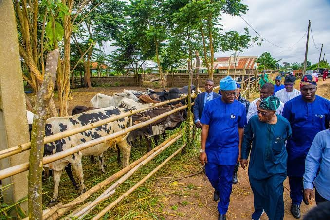
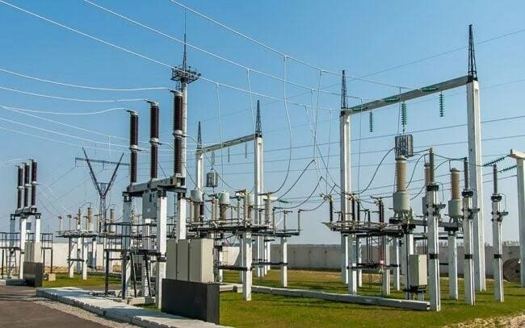
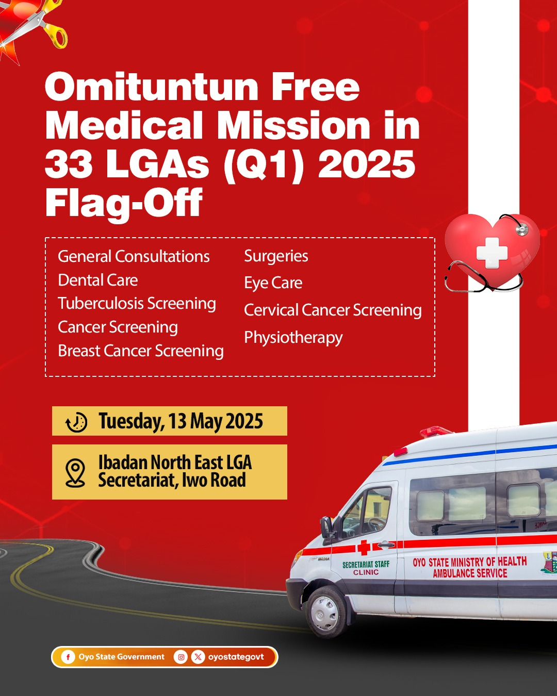
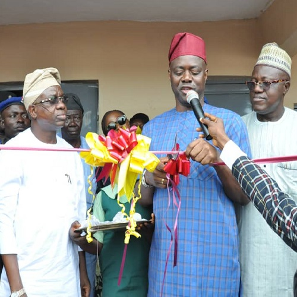

01 · Agriculture
Agriculture & Economic Development
Launched the Fasola Agribusiness Transformation Centre and the Eruwa agribusiness project, supporting agricultural production, processing and economic activity across the state.
APM4OYO · Our Promises
A record of service in Oyo State and a clear agenda for a stronger, more accountable Nigeria.
Track record
A focus on practical investments that support communities, strengthen public services and expand economic opportunity across Oyo State.

01 · Agriculture
Launched the Fasola Agribusiness Transformation Centre and the Eruwa agribusiness project, supporting agricultural production, processing and economic activity across the state.

02 · Infrastructure
Delivered road rehabilitation projects and an 11 MW independent power project serving the Oyo State Secretariat and surrounding communities.

03 · Healthcare
Implemented the Omituntun Free Health Mission, improved primary healthcare facilities and recruited additional healthcare workers across the state.
Photo source: Oyo State Feedback Service
04 · Education
Introduced education programmes and student support initiatives to improve access to learning and upgrade school infrastructure.
Photo source: Oyo State Government05 · Security
Supported security operations including Operation Amotekun and provided security patrol vehicles to protect communities across Oyo State.
Photo source: Seyi Makinde2027 vision
The proposed Reset Nigeria Agenda identifies economic reform, education, national security and governance as its core pillars—translating progress made in Oyo State into a national model of accountable, people-centred leadership.
Promote productive industries, reduce avoidable business costs and create conditions that support investment and employment.
Improve educational standards, teacher development and technical training to prepare young Nigerians for employment and entrepreneurship.
Strengthen intelligence, early-warning systems and coordination among security agencies, including potential reforms to security responsibilities.
Strengthen public institutions, improve transparency and promote more effective coordination between federal, state and local governments.
Support agricultural production, food processing, storage and distribution to improve food availability across Nigeria.
Promote inclusive governance and national dialogue, including a proposed four-year transitional Government of National Unity if elected.